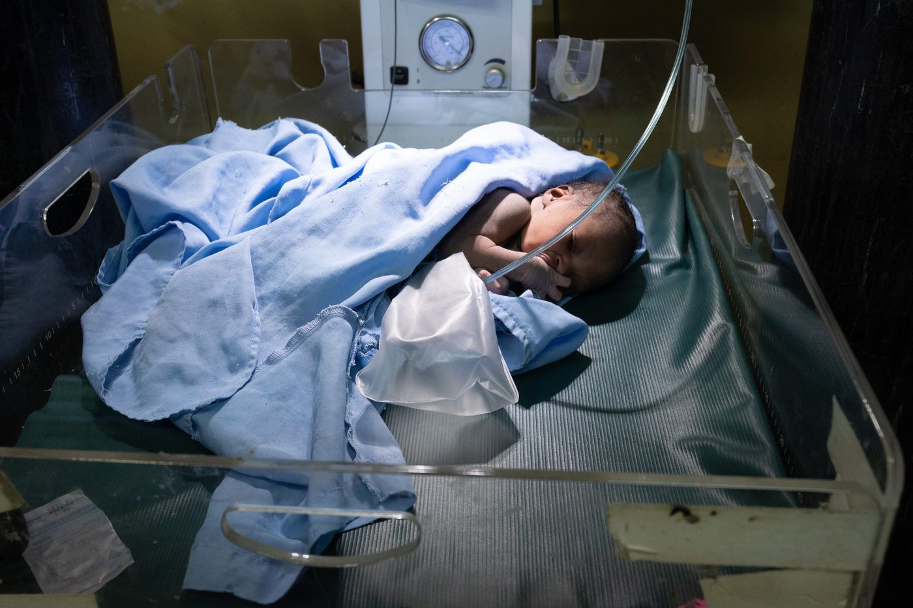
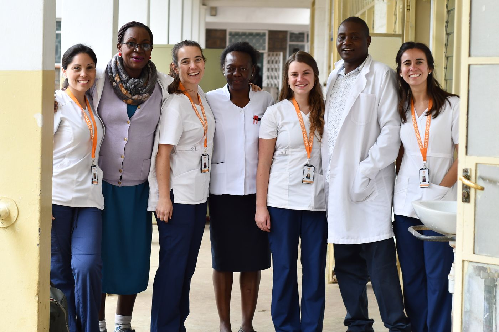
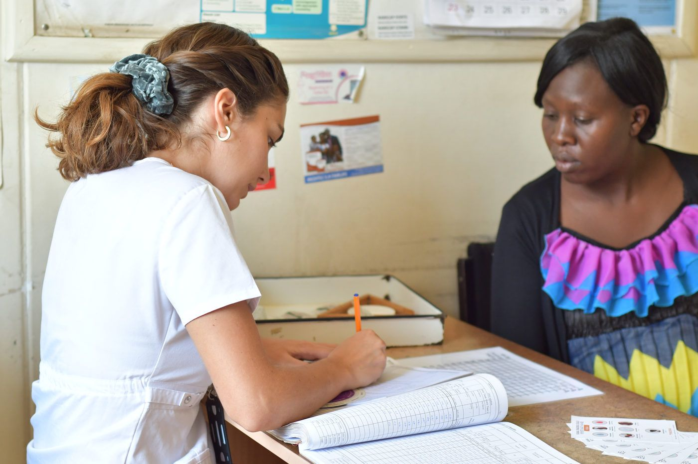
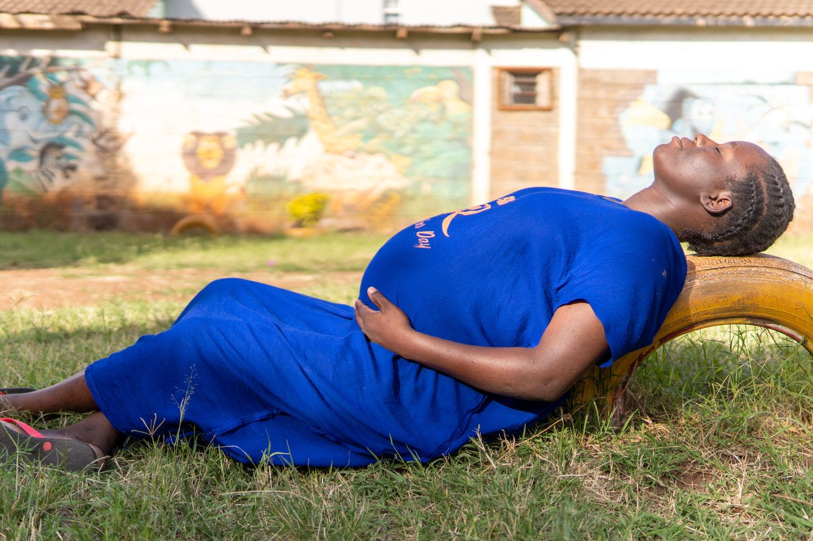

Programa Salud · Embarazo y parto
Atención digna antes, durante y después del parto
A través de nuestro programa de salud velamos por que las madres y sus hijos reciban atención sanitaria antes, durante y después del parto.
 Partos dignos
Partos dignosQué hacemos
Cómo acompañamos
Control y parto
Ofrecemos controles prenatales, atención del parto y consejería en lactancia materna.
Seguimiento en casa
Acompañamos a madres y recién nacidos con visitas domiciliarias continuas.
Capacidades locales
Educamos y capacitamos al personal de salud local para potenciar habilidades en la propia comunidad.

Levantas un poco la vista y entre la lluvia y el viento miles de techos de zinc se asoman sobre uno de los slums más grandes del mundo. Y es aquí el origen de cada una de las mamás de Maisha. Un origen adverso, que con el correr de los años estando en Kenia no deja de sorprenderme y revolverme la cabeza, el corazón y la guata.
Catalina BustosAsesora Programa Salud
Galería
En terreno




Ayúdanos a que más madres lleguen a salud
Con un aporte mensual sostienes el trabajo en Kibera durante todo el año.
Otros programas